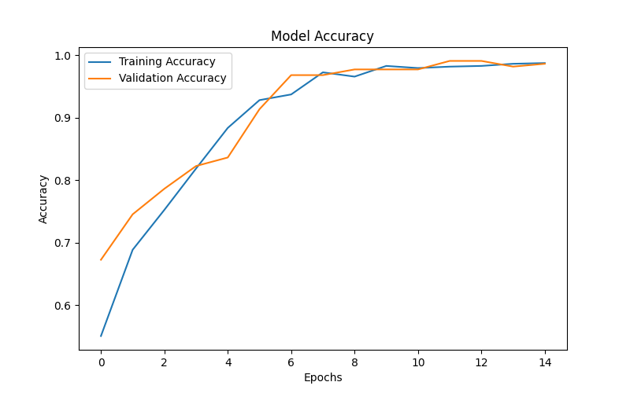

Project Overview
This project applies deep learning techniques to detect lung abnormalities from CT scan images. Two CNN models were built to solve the problem at different levels of complexity.
- Basic CNN Model: Binary classification between Cancer and Normal.
- Advanced CNN Model: Multi-class classification between Benign, Malignant, and Normal.
Tools & Technologies
Dataset
Dataset: IQ-OTHNCCD Lung Cancer Dataset
The dataset contains CT scan images categorized into three classes:
- Normal
- Benign
- Malignant
Project Workflow
Load CT Scan Dataset
Image Preprocessing
Resize Images
Normalize Pixels
Split Train/Test
Train CNN Model
Evaluate Model
Save Model
Prediction
Model Training Results

Training Accuracy

Training Loss
Example Predictions

Prediction — Normal

Prediction — Malignant
GitHub Repository
You can view the complete project, code, models, notebooks, and documentation on GitHub.
Open GitHub Project